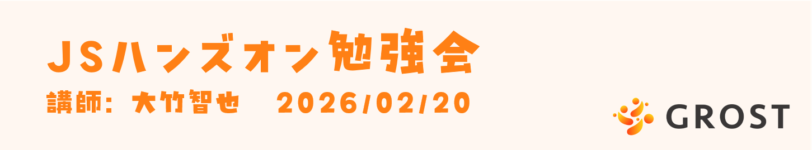

Profile
2つのMISSIONについて
この勉強会では、人間工学・感性科学に基づく2つのMISSIONに取り組みます。
MISSION 1【認知負荷の軽減】
スムーズスクロールでストレスフリーなナビゲーションを実現。急激な画面遷移による認知的断絶を防ぎます。
MISSION 2【アテンションの制御】
適切なタイミングと視覚効果でユーザーの注意を誘導。メニューの開閉タイミングを最適化し、操作の「区切り」を明確にして認知負荷を軽減します。
これらのMISSIONを通じて、より人間に優しいWebインターフェースの設計方法を学びます。
MISSION 1 スムーズスクロールデモ
このセクションでは、MISSION 1 のスムーズスクロール効果を体験できます。
体験方法：
- 右上のハンバーガーメニューを開く
- 目次から別のセクション（お問い合わせなど）をクリック
- スムーズにスクロールする様子を観察
人間工学ポイント：
急激な画面遷移は「認知的な断絶」を引き起こしますが、スムーズなスクロールは空間的な連続性を保ち、ユーザーのストレスを軽減します。
MISSION 2 アテンション制御デモ
このセクションでは、MISSION 2 のアテンション制御効果を体験できます。
体験方法：
- 右上のハンバーガーメニューを開く
- メニューが開く時の段階的なぼかし効果を観察
- メニュー外をクリックして閉じる時の遅延タイミングを体感
人間工学ポイント：
メニュー開閉時の適切なタイミング制御により、ユーザーの注意を段階的に誘導し、誤操作感を軽減します。開く動作はゆっくり、閉じる動作は速くという非対称タイミングで自然な操作感を実現しています。
勉強会完了チェック
勉強会の内容をすべて学習し終えましたか？
下のチェックボックスをクリックして、学習完了をお知らせください！
☐
勉強会お疲れ様でした！！
💡 チェックすると特別な演出でお疲れ様の気持ちをお伝えします！